항공전자정비기능사 (2001-07-22 기출문제)
1과목: 임의 구분
1. 항공기 기내전화장치(interphone system)에 사용되는 전원(power source)의 전압은?
- 28볼트(volt)
- 12볼트(volt)
- 6 볼트(volt)
- 1.5볼트(volt)
(정답률: 알수없음)

2. 항공기에 사용되는 단파 통신장치(HF)에 대한 설명으로 옳지 않은 것은?
- 2[㎒]∼ 29.999[㎒] 사이의 주파수를 사용한다.
- 전리층 반사에 의하여 원거리까지 교신할 수 있다.
- 초단파 통신에 비하여 안정된 통신 방법이며 주로 공항 주변에서 사용한다.
- 진폭 변조를 하며 대부분 단측파대(SSB)만의 전파만을 발사한다.
(정답률: 알수없음)
3. 비행기록 집적장치(AIDS)에 기록된 data의 이용 목적이 아닌 것은?
- 운항승무원의 운항감시
- 각종 항공장치의 조기고장 발견
- 항공기 성능분석
- 운항 및 정비면의 효율적 운용도모
(정답률: 알수없음)
4. CVR에 대한 설명으로 옳지 않은 것은?
- 최종 비행시간 30분 동안의 내용이 녹음된다.
- 조종실 화재 감시 장치이다.
- Endless 테이프이다.
- 승무원과 관제소등 기타 기내통화가 모두 녹음된다.
(정답률: 알수없음)
5. 디지탈 비행자료 기록장치의 자기테이프(DFDR)는 몇 시간 자료를 기록할 수 있는가?
- 25시간
- 15시간
- 5시간
- 1시간
(정답률: 알수없음)
6. 비행 data 기록장치(FDR)는 어떤 장치인가?
- 운항 승무원의 통화내용을 기록하는 장치이다.
- 사고시 비행상태를 규정하는데 필요한 data를 기록하는 장치이다.
- 운항에 필요한 data를 미리 기록해 두는 장치이다.
- 이 장치에 기록된 data에 따라 자동 비행되는 장치이다.
(정답률: 알수없음)
7. 관성항법장치(INS)로서 얻을 수 없는 정보는?
- 현재의 비행위치
- 도착공항 까지의 거리
- 비행코스에 대한 벗어난 정도
- 방위에 따라 위상이 변화
(정답률: 알수없음)
8. 항공교통관제(ATC) 중 계기 방식에 의해 비행하는 항공기 및 특별관제공역을 비행하는 항공기에 대한 관제는?
- 항로관제(Air route traffic control)
- 진입관제(Approach control)
- 착륙유도관제(Final approach control)
- 비행장관제(Aerodrome control)
(정답률: 알수없음)
9. 레이다의 목표물 탐지에 대한 기본 요건을 설명한 것으로 옳지 않은 것은?
- 레이다 안테나와 목표물 간에 차단물체가 없어야 한다.
- 목표물은 레이다의 최대 탐지거리 이내에 있어야 한다.
- 목표물은 레이다의 최소 탐지거리 밖에 있어야 한다.
- 특정의 사물을 탐지하기 위해서는 주위의 물체 보다 특정사물의 반사 에너지가 약해야 한다.
(정답률: 알수없음)
10. 거리측정장치(DME : Distance Measuring Equipment)의 설명으로 옳지 않은 것은?
- DME 지상국과의 거리를 측정하는 장치이다.
- 수신된 전파의 도래시간을 측정하여 현재의 위치를 알아낸다.
- 사용 주파수는 960㎒ ∼ 1,215㎒이다.
- 항공기에서 발사된 질문 펄스와 지상국 응답 펄스간의 도래시간을 계산하여 거리를 측정한다.
(정답률: 알수없음)
11. 외측 마아카 비이콘(outer marker beacon)의 변조신호 주파수는 몇[Hz] 인가?
- 3,000
- 1,300
- 400
- 100
(정답률: 알수없음)
12. 민간항공기의 VHF 통신 SYSTEM 에 대한 설명으로 옳지 않은 것은?
- 안테나가 송.수신 겸용이다.
- 가시거리 통신 수단이다.
- HF 통신에 비해 명료도가 좋다.
- 주파수는 3 ∼ 300㎒이다.
(정답률: 알수없음)
13. SELCAL SYSTEM은 어느 무선국을 호출하는 SYSTEM인가?
- 항공기 상호간 호출
- 지상에서 항공기를 호출
- 항공기에서 지상을 호출
- HF와 VHF 통신 SYSTEM과 관계 없다.
(정답률: 알수없음)
14. 자동 방향 탐지 수신기의 변조 방식과 안테나 구성은?
- 진폭변조,ADCOCK & LOOP 안테나
- 진폭변조,SENSE & LOOP 안테나
- 상측파대,SENSE 안테나
- 상측파대,LOOP 안테나
(정답률: 알수없음)
15. COMPASS SYSTEM 의 구성품이 아닌 것은?
- ADI
- FLUX VALVE
- COMPASS CONTROLLER
- PLATFORM HEADING
(정답률: 알수없음)
16. 마아카 비이콘 SYSTEM은 70㎒에 여러 변조 주파수를 사용하고 있다. 해당하지 않는 주파수는?
- 400㎐
- 1,000㎐
- 1,300㎐
- 3,000㎐
(정답률: 알수없음)
17. 75MHz에 1300Hz 신호를 변조 신호로 쓰며, 호박색 등이 계기판에 들어 오도록 한 마아카 비이콘장치는 진입방향의 활주로를 기준으로 어느 곳을 통과할 때인가?
- 뒷방향
- 내측
- 중앙
- 외측
(정답률: 알수없음)
18. 비행기에 장착한 상태에서 쉽게 컴퓨터들의 자체 고장 여부를 판별할 수 있는 회로를 가진 시험장비는?
- BUILT – IN
- AUTO
- MASTER
- CENTRAL
(정답률: 알수없음)
19. FLARE 명령은 전파고도 약 몇 피트에서 이루어지는가?
- 5
- 30
- 50
- 150
(정답률: 알수없음)
20. YAW DAMPER 계통의 기능으로 옳지 않은 것은?
- DUTCH ROLL 억제
- 회전 선회시 조력
- 엔진 고장 보상
- 비행기수 상승
(정답률: 알수없음)
2과목: 임의 구분
21. PITCH CHANNEL과 자동 추력 제어 계통에는 각기 SPEED MODE가 있다. 우선권을 갖는 것은?
- 먼저 선택한 신호
- 나중 선택한 신호
- PITCH CHANNEL
- 자동 추력 제어 신호
(정답률: 알수없음)
22. 마아커 비이콘 주파수 대역의 전, 후대역의 주파수를 이용하는 것은?
- VHF 항법 및 통신
- HF 통신
- TV
- FM
(정답률: 알수없음)
23. 자동 조종 장치에서 도움날개의 설명으로 옳은 것은?
- 저속일 때는 바깥쪽만 사용한다.
- 고속일 때는 바깥쪽만 사용한다.
- 저속일 때는 바깥쪽, 안쪽 동시에 사용한다.
- 저속, 고속일 때 바깥쪽이나 안쪽 중 임의로 1개만 사용한다.
(정답률: 알수없음)
24. 자동 조종 장치에서 요 댐퍼는 무슨 움직임을 포착하는가?
- 키놀이
- 빗놀이
- 옆놀이
- 8자놀이
(정답률: 알수없음)
25. 안테나의 설명으로 옳은 것은?
- 주파수가 낮을수록 안테나는 작게된다.
- 전자 나팔의 단면적을 크게 할수록 지향성은 높다.
- 슬롯안테나에서 슬롯의 길이가 λ/2가 되지 않을 때 복사 능률이 좋다.
- 전자나팔은 반사기에 해당된다.
(정답률: 알수없음)
26. 이상적인 정전류 전원의 단자전압 V와 출력전류 I의 관계를 나타내는 그래프는?
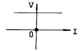
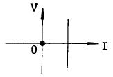
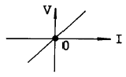
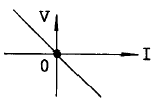
(정답률: 알수없음)
27. 배율기의 저항에 대한 설명으로 옳은 것은?
- 전압계의 측정범위를 넓힐때 사용한다.
- 전류계의 측정범위를 넓힐때 사용한다.
- 저항계의 측정범위를 넓힐때 사용한다.
- 용량계의 측정범위를 넓힐때 사용한다.
(정답률: 알수없음)
28. 자계중의 한점에 1[㏝]의 정자극(N극)을 놓았을 때, 이에 작용하는 힘의 크기와 방향을 그 점에 대한 무엇이라고 하는가?
- 자계의 세기
- 자위
- 자속밀도
- 자위차
(정답률: 알수없음)
29. 지름에 비하여 매우 긴 솔레노이드가 있다. 권회수는 1[m]마다 50회 감겨 있고 1[A]의 일정전류가 흐른다면 솔레노이드 내부자계의 세기는?
- 5000/2π[AT/m]
- 5000[AT/m]
- 50[AT/m]
- 50/2π[AT/m]
(정답률: 알수없음)
30. 7[C]의 전기량이 두점 사이를 이동하여 35[J]의 일을 하였다면, 이 두점 사이의 전위차는 얼마인가?
- 2[V]
- 3[V]
- 6[V]
- 5[V]
(정답률: 알수없음)
31. 그림에서 C1 = 4[㎌], C2 = 6[㎌], C3 = 3.6[㎌]이고 AB간의 합성 정전용량 C = 10[㎌]일때 Cx의 정전용량[㎌]은?
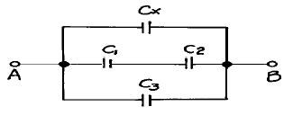
- 3
- 4
- 5
- 6
(정답률: 알수없음)
32. 1[C]에서 나오는 전기력선 수는 몇개인가?
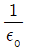
개- 1개
- 10개
- εo개
(정답률: 알수없음)
33. 평형 3상 회로의 한 상에서 소비되는 전력이 P라면 3상회로 전체에서 소비되는 전력은?
- P
- 3√P
- 2P
- 3P
(정답률: 알수없음)
34. R-L-C 직렬회로에서 전압전류가 진동상태로 되는 조건으로 옳은 것은?
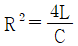
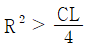
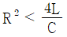
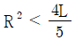
(정답률: 알수없음)
35. 200[V]를 가하여 5[A]가 흐르는 직류전동기를 5시간 사용할 때, 전력량[KWh]은 얼마인가?
- 0.5
- 5
- 50
- 500
(정답률: 알수없음)
36. UＪT의 전극을 옳게 나타낸 것은?
- 이미터 전극 2, 베이스 전극 1
- 이미터 전극 1, 베이스 전극 1
- 이미터 전극 1, 베이스 전극 2
- 이미터 전극 2, 베이스 전극 2
(정답률: 알수없음)
37. 애사끼 다이오드의 특성에 해당되는 것은?
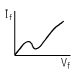
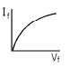
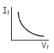
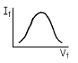
(정답률: 알수없음)
38. 브리지 정류회로에서 부하 연결 때 100V 이고, 무부하 때 110V로 증가 하였다면, 전압변동률은 몇 % 인가?
- 9
- 10
- 11
- 12
(정답률: 알수없음)
39. 그림과 같은 정전압회로의 설명으로 잘못된 것은?
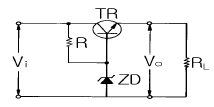
- ZD는 기준전압을 얻기 위한 제너다이오드이다.
- 부하전류가 증가하여 Vo가 저하될 때에는 TR의 BE간 순방향 전압이 낮아진다.
- 직렬제어형 정전압회로이다.
- TR은 제어석이고, R은 ZD와 함께 제어석의 베이스에 일정한 전압을 공급하기 위한 것이다.
(정답률: 알수없음)
40. 주파수변별기의 용도로 옳은 것은?
- 잡음 방지
- 주파수 변화를 진폭 변화로 변환
- 반송파 주파수의 제거
- 주파수 변조 방송채널 구분
(정답률: 알수없음)
3과목: 임의 구분
41. 그림과 같은 회로의 출력에 나타나는 파형은?
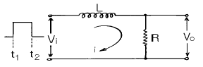
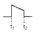
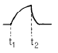
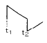
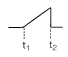
(정답률: 알수없음)
42. 그림과 같은 회로는 무슨 회로인가? (단, Vi는 직사각형파이다.)
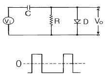
- 클리핑회로
- 클램핑회로
- 콘덴서 입력형 필터회로
- 반파정류회로
(정답률: 알수없음)
43. 그림과 같은 논리회로에서 출력 X에 맞는 논리식은?
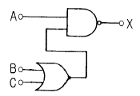
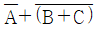
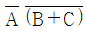
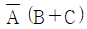
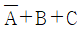
(정답률: 알수없음)
44. 그림과 같은 연산증폭기회로에서 Ro=10kΩ, Ri=2kΩ, Vi=1.5V일 때 출력전압 Vo는 몇 V 인가?
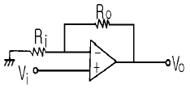
- 8
- 9
- 10
- 12
(정답률: 알수없음)
45. 스태거 증폭회로에 대한 설명이 잘못된 것은?
- 각 증폭단의 동조주파수를 약간씩 다르게 종속접속하여 전체 특성을 갖는다.
- 각 증폭단의 동조주파수 및 회로의 손실을 조금씩 달리하여 종속접속한다.
- 제작 및 조정이 어렵다.
- 이 회로는 중간주파 증폭회로에 쓰인다.
(정답률: 알수없음)
46. 그림과 같은 회로의 명칭은?
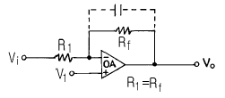
- 적분기
- 감산기
- 미분기
- 부호변환기
(정답률: 알수없음)
47. 그림과 같은 이상형 CR발진기의 설명이 옳은 것은?
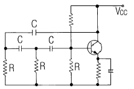
- 발진주파수는
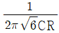
이다. - 고주파 발진용에 주로 사용된다.
- 베이스측과 컬렉터측의 위상차는 90도에서 발진한다.
- 안정도가 높으므로 증폭도는 29미만에서도 충분히 발진한다.
(정답률: 알수없음)
48. 반가산기(Half Adder)의 논리회로의 구성은?
- Exclusive OR회로 1개, AND회로 1개
- Exclusive OR회로 1개, OR회로 1개
- OR회로 1개, AND회로 2개
- OR회로 2개, AND회로 2개
(정답률: 알수없음)
49. 오실로스코프에 의한 교류 측정시 피측정 전압의 소인폭 조절과 관계있는 회로 부분은?
- 수직 증폭회로
- 트리거 발생회로
- 수평측 증폭회로
- 초퍼 스위칭회로
(정답률: 알수없음)
50. 음극선관(C.R.T)에서 휘도 조정은 전기적으로 무엇을 변화 시키는가?
- 컨트롤 그리드 전압
- 애노드 전압
- 수직 편향판의 전압
- 수평 편향판의 전압
(정답률: 알수없음)
51. 가동 코일형 전류계는 측정하고자 하는 전류가 대체로 50[㎃] 이하로 작을 때는 가동 코일에 직접 전류를 흐르게 할 수 있으며 그 이상의 전류를 측정 하고자 할 때에는 계기에 무엇을 접속하여 측정하는 것이 옳은가?
- 분류기
- 배율기
- 검류기
- 정류기
(정답률: 알수없음)
52. 다음 그림에서 전류계 A2의 내부저항 값은? (단, A1= 30[㎃], A2= 20[㎃], R = 4[Ω]임)
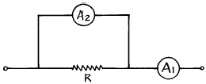
- 2[Ω]
- 4[Ω]
- 6[Ω]
- 8[Ω]
(정답률: 알수없음)
53. VTVM의 프로우브 속에 들어 있는 것은?
- 퓨즈
- 발진 기능
- 정류 기능
- 전압강하 기능
(정답률: 알수없음)
54. 스미스 선도(Smith chart)는 다음 무엇을 구하는가?
- 정규화 임피던스
- 반사 계수
- 전송선로의 특성 임피던스
- 파수(波數)
(정답률: 알수없음)
55. 계기 정수가 2400[회/kWh]의 적산 전력계가 30초에 20회전 하였을 때, 전력은?
- 500[W]
- 750[W]
- 1000[W]
- 1250[W]
(정답률: 알수없음)
56. 전해액이나 접지 저항을 측정할 때 사용되는 전원은?
- 직류 및 교류
- 맥류
- 직류
- 교류
(정답률: 알수없음)
57. 상호 인덕턴스 측정법에서 많이 사용하는 것은?
- 윈 브리지법
- 공진 브리지법
- 맥스웰 브리지법
- 셸링 브리지법
(정답률: 알수없음)
58. A-D 컨버터는 무슨 회로인가?
- 저항 측정회로
- 아날로그 양을 디지털 양으로 변환하는 회로
- 전류의 양을 전압의 양으로 변환하는 회로
- 전력을 전압으로 변환하는 회로
(정답률: 알수없음)
59. 출력 임피던스가 50[Ω]인 표준신호 발생기의 출력레벨을 40[㏈]에 세트 시키고 50[Ω]의 임피던스를 가진 부하를 연결하였다. 부하 양단의 단자 전압은?
- 50 [㎶]
- 100 [㎶]
- 200 [㎶]
- 500 [㎶]
(정답률: 알수없음)
60. 오차의 종류 중 계통 오차에 속하지 않는 것은?
- 이론적 오차
- 기계적 오차
- 개인적 오차
- 우연 오차
(정답률: 알수없음)